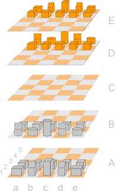

Willkommen bei Raumschach.
| <= Du möchtest Raumschach runterladen? Kein Problem! Einfach links klicken. Du willst online spielen? Dann ab nach rechts! => |

Was ist Raumschach?
Raumschach ist eine Erweiterung des Schachspiels in drei Dimensionen.
Entsprechend dieser Seite, von der ich die meisten Informationen zu diesem Spiel entnommen habe, ist Raumschach:
"(German for Space Chess) is one of the first three-dimensional chess variants and the first to survive until present times. It was invented by Herr Doktor Ferdinand Maack in 1907. Maack first experimented with an 8x8x8 array but later determined that a 5x5x5 array yields a nicer game. Maack founded a Raumschach club in Hamburg in 1919, which remained active until the Second World War."
Ok ... Und wie kann ich es ausprobieren?
Nun gut, es gibt zwei Möglichkeiten: Entweder ein Raumschach selber bauen (ich kann dazu Tapetenrollen als Stützen, Glasschneidebretter nebst Eding für die Ebenen, Lehm für die Figuren und Geduld und Fingerfertigkeit empfehlen) oder die hier vorgestellte Softwarelösung verwenden. Beides hat seinen Charme. Eine einzige Bitte: Falls ihr euch für die Software entscheidet gebt mir bitte Feedback unter: raumschach at moduliertersingvogel Punkt de.
Software
Raumschach erlaubt es zwei Spielern, über das Internet oder am selben Computer (na, doch von den Tapetenrollen abgeschreckt?) gegeneinander zu spielen. Dabei können beliebig viele Spieler als Zuschauer online zugegen sein.
Anforderungen
Einer der Spieler muss Raumschach auf seinem Rechner starten. Dazu ist Windows und Java1.6+ (sollte standardmäßig installiert sein) notwendig.
Alle anderen Spieler und Zuschauer benötigen einen html5-fähigen Browser. Ich empfehle Firefox4. Firefox 3.6 funktioniert ebenfalls, Google Chrome macht Schwierigkeiten und IE ist bislang nicht getestet (hat jemand Lust drauf?). Im Browser muss Javascript aktiviert sein.
Download
Raumschach kann hier runtergeladen werden. Einfach in ein beliebiges Verzeichnis entzippen und die Eaumschach.exe starten.
Ich will doch nur spielen!
Puh! Endlich durch mit dem ganzen Technikkram. Ihr habt es geschafft: Hier in 3 (4) leitfasslichen Schritten die Anweisung zum Spielen:
Spieler A:
- Lädt Raumschach runter entzipt es in ein Verzeichnis seiner Wahl
- Stellt, falls gewünscht, eine Verbindung mit dem Internet her
- Klickt doppelt auf die Datei Raumschach.exe im Verzeichnis Raumschach
- Andere Spieler einbinden:
- Falls beide Spieler am selben Rechner (von Spieler A) sitzen, einfach diese öffnen
- Falls er online mit Spieler B spielen will: Browser starten und diese Seite öffnen, anschließend den entsprechenden Link zu erstellen eines neuen Spiels anklicken. Dort gibt er seinen Spielernamen und eine kurze Beschreibung des Spieles ein. Beim Klick auf Daten senden wird dann die Seite mit seinem Raumschachspiel geöffnet
Alle anderen:
- Stellen eine Verbindung mit dem Internet her
- Starten ihren Browser
- Wählen auf dieser Seite den Link zu der Spielerliste und wählen ein Spiel aus. Sofort wird das ausgewählte Raumschach geöffnet und eine Verbindung mit Spieler A hergestellt
Jetzt geht 's ab
Im Browser sollte jetzt folgendes angezeigt werden:

Wählt bitte eine Farbe aus (orange oder grau) oder, falls beide Spieler am selben Rechner sitzen oder ihr gegen euch selbst spielen wollt, wählt beide. Falls eine Fehlermeldung angezeigt wird, ist diese Farbe schon vergeben (siehe auch das nächste Kapitel: „Bekannte Käfer”). Falls ihr euch nur als Zuschauer an einem Spiel beteiligen wollt klickt bitte auf Cancel.
Falls am unteren Bildschirmrand noch ein Fortschrittsbalken angezeigt wird: Bitte warten. Dann werden die einzelnen Figuren noch initialisiert.
Nun geht 's los! Grau beginnt. Vielleicht vorher noch einen schnellen Blick auf die Hilfe
Viel Spaß beim Spielen!
Wenn was schiefgeht
Spieler B kann keine Verbindung zu Spieler A herstellen
Dieses Problem kann zwei Ursachen haben: Eine Firewall bei Spieler A oder B sowie einen falsch eingestellten Router.
Lösung: Funktioniert Skype auf dem Rechner, so ist zumindest der Router nicht das Problem; der Firewall in diesem Fall bitte Zugriffe auf Port80 und für Raumschach erlauben. Allerdings sollte Skype nicht gestartet sein, wenn Raumschach auf dem Rechner von Spieler A gestartet wird. Falls Skype nicht richtig funktioniert, ist wahrscheinllich kein portforwarding eingerichtet. Dann bitte in der Betriebsanleitung des Routers nachschauen und ein entsprechendes forwarding für Port 80 einrichten.
Bekannte Käfer
- Falls bei der Auswahl der Farbe eine Warnung angezeigt wird, diese Farbe sei schon vergeben: Ein zweites Mal probieren. Falls die Warnung dann immer noch erscheint ist die Farbe wirklich schon weg.
- Werden in einem Browser zwei Tabs mit Raumschach geöffnet, friert das Spiel ein.
Kommt bald (ja, ja ... Die liebe Zeit)
- Linuxunterstützung für die Hostmaschine